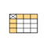
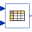

CombiTable2DBaseBase class for variants of CombiTable2D |

|
| tableOnFile |
Value: false Type: Boolean Description: = true, if table is defined on file or in function usertab |
|---|---|
| table |
Value: fill(0.0, 0, 2) Type: Real[:,:] Description: Table matrix (grid u1 = first column, grid u2 = first row; e.g., table=[0, 0; 0, 1]) |
| tableName |
Value: "NoName" Type: String Description: Table name on file or in function usertab (see docu) |
| fileName |
Value: "NoName" Type: String Description: File where matrix is stored |
| verboseRead |
Value: true Type: Boolean Description: = true, if info message that file is loading is to be printed |
| smoothness |
Value: Modelica.Blocks.Types.Smoothness.LinearSegments Type: Smoothness Description: Smoothness of table interpolation |
| extrapolation |
Value: Modelica.Blocks.Types.Extrapolation.LastTwoPoints Type: Extrapolation Description: Extrapolation of data outside the definition range |
| verboseExtrapolation |
Value: false Type: Boolean Description: = true, if warning messages are to be printed if table input is outside the definition range |
| u_min |
Value: getTable2DAbscissaUmin(tableID) Type: Real[2] Description: Minimum abscissa value defined in table |
| u_max |
Value: getTable2DAbscissaUmax(tableID) Type: Real[2] Description: Maximum abscissa value defined in table |
| tableID |
Type: ExternalCombiTable2D Description: External table object |
|---|
|  |
Modelica.Blocks.Tables
Table look-up in two dimensions (matrix/file) with vector inputs and vector output of size n |
|
Modelica.Blocks.Tables
Table look-up in two dimensions (matrix/file) |